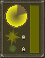
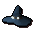

")
The Great Orb Project
Introduction | Location | Requirements | Recommended Items
Taking part in the Project | Rewards | Development Team
Taking part in the Project | Rewards | Development Team
The Great Orb Project is available to all players, both free and Members, although non-members only have access to a limited version of the game.
Please note this is a 'Safe' activity. There is nothing to kill you here, unless you are poisoned.
Introduction

Move through pocket universes and play with arcane energies beyond mortal comprehension (well, beyond comprehension until the research is published), discover the essence of magic and win fabulous prizes.
Location

The Wizards' Tower can be found quite quickly by teleporting to Lumbridge followed by a quick walk west to Draynor Village, and a gentle meander south. Alternatively, if you have finished the Lumbridge/Draynor Achievement Diary, you will be able to make use of the cabbage-port granted by the Explorer Ring to arrive at the Port Sarim cabbage patch.
Requirements
You must have completed Rune Mysteries and have a Runecrafting level of 50 or greater.
Recommended Items
You do not need any specific equipment to play The Great Orb Project other than the wands given to you by the wizards running the experiments. Because you need space for these wands and the essence that may appear in your inventory, it's probably a good idea to carry no items into the game with you. You must also keep your head clear to wear a hat indicating your team.
Taking part in the Project
 To begin playing The Great Orb Project, you will need to speak to one of the two lead researchers. Acantha believes that the green energy that manifests around the altars is pure magical energy and the yellow energy is a by-product, while Vief believes the opposite. The two wizards will explain how to help out with their research, but you can simply right-click them and select 'Join' if you have already had the process explained.
To begin playing The Great Orb Project, you will need to speak to one of the two lead researchers. Acantha believes that the green energy that manifests around the altars is pure magical energy and the yellow energy is a by-product, while Vief believes the opposite. The two wizards will explain how to help out with their research, but you can simply right-click them and select 'Join' if you have already had the process explained.
When you have joined Acantha's or Vief's team, you will find that you are now wearing a suitably coloured hat and carrying a few fancy bits of arcane equipment. The hat not only allows you to identify members of your team, but also helps to remind you which energy orbs you should be trying to get back to the altars.
| Equipment | Use |
 Repeller wand |
The repeller wand can be used to push the orbs of magical energy around. To use it, simply click on the orb you wish to move. Remember, of course, that you will need to position yourself to make sure it goes in the right direction. |
 Attractor wand |
Attractor wands, as you might expect, pull the energy orbs towards you. Like the repeller wand, you can pull an orb towards yourself simply by clicking on it. |
 Barrier generator |
To help you hold back the wicked energies that your opponents are attempting to draw into the altars, you can click on the barrier generator in your inventory. This will raise a temporary field where you stand through which no energy orbs can pass unless it is already being pulled or pushed. |
You can swap which of the two wands you are holding by clicking on the wand in your inventory or by right-clicking on one of the orbs and selecting 'Change-wand'.
Once the teams have been decided and there are enough players to help each team, a portal will open in the Runecrafting Guild to take you to the Air Altar, the first of the areas in which you will be working. The portal will only remain open for twenty seconds, so don't loiter too long in the Guild! If you are playing on a free world, you will only take part in The Great Orb Project at six altars; if you are playing on a members' world, you will go to eight. The altars you go to are as follows:
- Air
- Mind
- Water
- Earth
- Fire
- Body
- Chaos (Members Only)
- Nature (Members Only)
 At each altar it is your duty to bring the orbs of your team's colour to the altar, while keeping the other orbs at bay. The only way to do this is through using the wands and the barrier generator, and fine-tuned teamwork will almost always win the day.
The interface to the right will keep track of the number of orbs each side has brought to the altar, as well as showing your level of participation in the contest. The meter to the right will slowly drain, but can be topped up by moving orbs about and generating barriers. If your meter empties, you will be returned to the Runecrafting Guild to receive an ear-lashing from Wizard Elriss.
The distance you can push or pull an orb depends on your Runecrafting level, so those with the highest levels will be able to move them about the fastest. Because the wands are tied to a specific colour, though, this is not true if you are trying to move your opponents' orbs: in this case, the orb will only ever move one square.
 You can use your wands to move any orb until the last thirty seconds, when you will only be able to move your own orbs about. Barriers will continue to block the magical energy as normal.
You can use your wands to move any orb until the last thirty seconds, when you will only be able to move your own orbs about. Barriers will continue to block the magical energy as normal.
Each round lasts for two minutes, and whichever team has brought the largest number of their orbs to the altar will win. Everyone taking part will then receive a few rune or pure essence, and be given a few moments to craft some runes at the altar if they wish, before a new portal opens and the teams travel to the next destination.
At the end of the six or eight altars (depending whether you are on a free or members' world), the team that won the most altars will be declared the winner and everyone will receive a number of tokens depending on how many altars their team won and whether they won overall.
Rewards
 Each altar will generate some rune or pure essence in your inventory. You will have a short period of time to convert any essence you like into runes using the altar before you have to move on to the next altar. You will receive double the normal experience for crafting runes at this time
Each altar will generate some rune or pure essence in your inventory. You will have a short period of time to convert any essence you like into runes using the altar before you have to move on to the next altar. You will receive double the normal experience for crafting runes at this time
In addition, Wizards Vief and Acantha have managed to secure enough funding to pay their research assistants for their help. At the end of each game, you will be awarded a number of tokens based on how well your team performed. You will receive the following for each altar:
- Win: 100 tokens
- Draw: 25 tokens
- Loss: 10 tokens
You will receive a further 200 tokens if your team wins the majority of the altars.
These tokens can be traded in for a variety of rewards for the magically-inclined adventurer. These range from rune/pure essence and talismans, up to runecrafter robes and Runecrafting staves.
Runecrafter Robes
Aside from looking the part and indicating your allegiance to one scientific theory or another (or a more scientifically-appropriate neutral stance), runecrafter robes provide a bonus to your Runecrafting level for moving orbs about while you are playing The Great Orb Project. Because you cannot wear it during the activity, the hat has no such bonus.
- Runecrafter gloves provide a +2 bonus.
- Runecrafter robes provide a +3 bonus.
- Runecrafter skirts provide a +3 bonus.
| Item | Levels Required |
||||||||||||||||||
| Attack Bonuses | Defence Bonuses | Other | |||||||||||||||||
![[Image: Stab]](../../img/main/kbase/table_text/stab1.gif "Stab") |
![[Image: Slash]](../../img/main/kbase/table_text/slash1.gif "Slash") |
![[Image: Crush]](../../img/main/kbase/table_text/crush1.gif "Crush") |
![[Image: Magic]](../../img/main/kbase/table_text/magic1.gif "Magic") |
![[Image: Range]](../../img/main/kbase/table_text/range1.gif "Range") |
|
|
|
|
|
![[Image: Summoning]](../../img/main/kbase/table_text/summoning1.gif "Summoning") |
![[Image: Strength]](../../img/main/kbase/table_text/strength1.gif "strength") |
![[Image: Prayer]](../../img/main/kbase/table_text/prayer1.gif "Prayer") |
|||||||
![[image]](../../img/main/kbase/minigames/rcguild/runecrafter_gloves.gif) Runecrafter gloves |
None | + 0 | + 0 | + 0 | + 2 | + 0 | + 2 | + 2 | + 2 | + 2 | + 2 | + 0 | + 0 | + 0 | |||||
|  Runecrafter hat |
None | + 0 | + 0 | + 0 | + 3 | + 0 | + 3 | + 3 | + 3 | + 3 | + 3 | + 0 | + 0 | + 0 | |||||
![[image]](../../img/main/kbase/minigames/rcguild/runecrafter_skirt.gif) Runecrafter skirt |
None | + 0 | + 0 | + 0 | + 4 | + 0 | + 4 | + 4 | + 4 | + 4 | + 4 | + 0 | + 0 | + 0 | |||||
![[image]](../../img/main/kbase/minigames/rcguild/runecrafter_robe.gif) Runecrafter robe |
None | + 0 | + 0 | + 0 | + 5 | + 0 | + 5 | + 5 | + 5 | + 5 | + 5 | + 0 | + 0 | + 0 | |||||
Runecrafting Staves
 Runecrafting staves are much more than just a pretty ornamentation: you can use them exactly as you use a Runecrafting tiara, as well as distracting the eyes in the Abyss to help you sneak past. To bind a talisman to a staff, simply take the talisman and the staff to the talisman's altar and use either of them on it.
Runecrafting staves are much more than just a pretty ornamentation: you can use them exactly as you use a Runecrafting tiara, as well as distracting the eyes in the Abyss to help you sneak past. To bind a talisman to a staff, simply take the talisman and the staff to the talisman's altar and use either of them on it.
Note that the law staff (created by attaching a law talisman to a Runecrafting staff) has no combat bonuses, so it can be taken onto Entrana. A staff that does not have a talisman attached cannot be wielded.
| Item | Levels Required |
||||||||||||||||||
| Attack Bonuses | Defence Bonuses | Other | |||||||||||||||||
|
|
|
|
|
|
|
|
|
|
|
|
|
|||||||
![[image]](../../img/main/kbase/minigames/rcguild/runecrafting_staff_fire.gif) Runecrafting staff |
None | + 0 | - 1 | + 7 | + 5 | + 0 | + 2 | + 3 | + 1 | + 15 | + 0 | + 0 | + 33 | + 0 | |||||
Runecrafting Teleport Tablets
 Runecrafting teleport tablets are identical to the teleport tablets you can build in your player-owned house and can be used to teleport you to any altar you have the requirements to craft runes at.
Runecrafting teleport tablets are identical to the teleport tablets you can build in your player-owned house and can be used to teleport you to any altar you have the requirements to craft runes at.
Extra Features
The Runecrafting Guild, being a place of research and filled with the wonders of magical experimentations, holds more than just the two recruiting scientists. Within its walls you will also find that the mages have been very busy indeed...
The Omni-Talisman (Members Only)
 The omni-talisman is a remarkable object created by Elriss to enable the devoted runecrafter to access almost every altar freely. If you are able to show her a talisman for each of the Runecrafting altars that require them (so there's no need to find a talisman for the Ourania Altar, for instance), she will grant you a hefty chunk of Runecrafting experience for each, as well as the omni-talisman.
The omni-talisman is a remarkable object created by Elriss to enable the devoted runecrafter to access almost every altar freely. If you are able to show her a talisman for each of the Runecrafting altars that require them (so there's no need to find a talisman for the Ourania Altar, for instance), she will grant you a hefty chunk of Runecrafting experience for each, as well as the omni-talisman. To craft an omni-talisman into a tiara or staff, take it to Wizard Korvak, who can be found staggering about in the Runecrafting Guild, jumping at shadows and being generally terrified of everything.
Wizard Korvak (Members Only)
In addition to helping you convert the omni-talisman into tiaras and staves, Korvak will also replace a lost medium abyssal pouch and repair any other pouches you have - of course, his experiences have cost him his sanity, so expect to have to pay for his services.The Rune Altar Map
Dominating the Runecrafting Guild you will doubtless notice a massive map of RuneScape. This is no ordinary map, of course - mages would never leave something so impressive alone - and can be used to locate the mysterious ruins that hide Runecrafting altars. To locate an altar, simply use a talisman on it and it will highlight it for you, along with a short description to help you find your way.
Development Team
Developer: John A, Nancy J
Graphics: James W, Alex R, Mark C, Giuseppe G, Jeff K, Kavi M, Wayne M
QA: Andrew C
Audio: Adam B

More articles in
Activities
|
|
|
Further Help
If this article does not help you, you may find the following sections of the RuneScape site helpful:
|
|